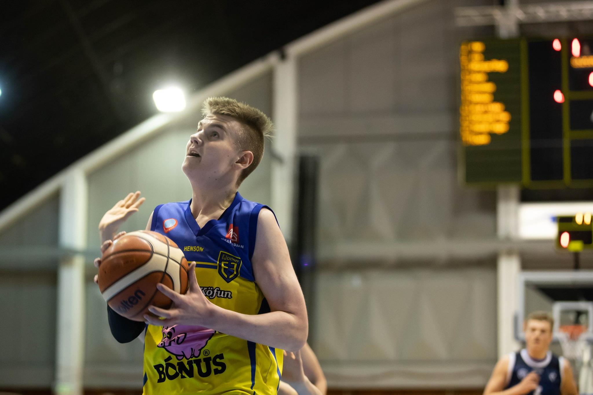
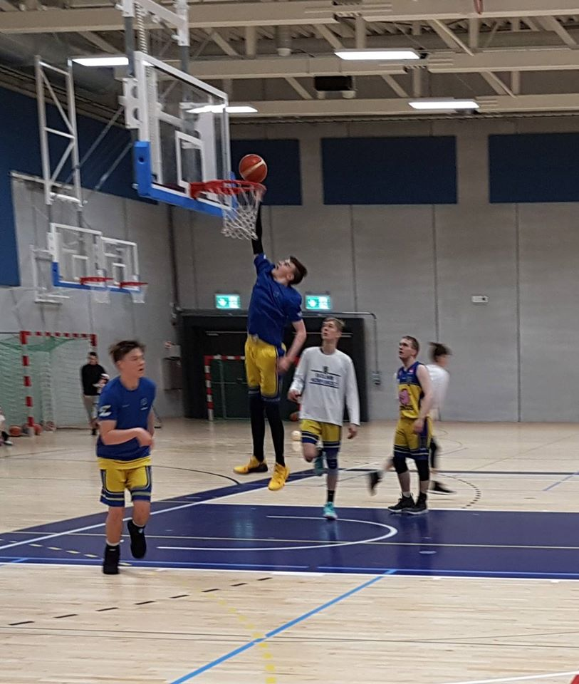

Um mig
Ég heiti Þorgrímur Starri en flestir kalla mig bara Starra. Ég er 2.06 m og var valinn í u16 í körfubolta sumarið 2019.
Er í tækniskólanum upp á Háteigsvegi
Ég stunda líka mikla líkamsrækt og þetta eru svona helstu lögin sem ég hlusta á þar
Áhugamál
Ég æfi körfubolta og hef gert það síðan ég var 5 að verða 6 ára og spila með fjölni.
Ég fer líka ótrulega oft í ræktinni til þess að vera sterkari, hraðari og til þess að vera með meiri sprengikraft í körfunni.
Ég nota tíman minn rosalega mikið í körfubolta eða eitthvað sem eg get bætt í körfubolta vegna þess að mig langar að komast og spila úti og eru það miklar líkur á að það gerist vegna þess að það er nú þegar scout búinn að tala við mig og er að vinna í því að koma mér í high school úti í bandaríkjunum.
Þetta er highlight myndband sem ég bjó til þess að scoutinn gæti deilt með þjálfurum skólanna
Þetta eru bandaríkin og ég er að plana að fara út í skóla enn óvitað um í hvaða fylki
Nokkrar myndir af mér úr körfunni
 